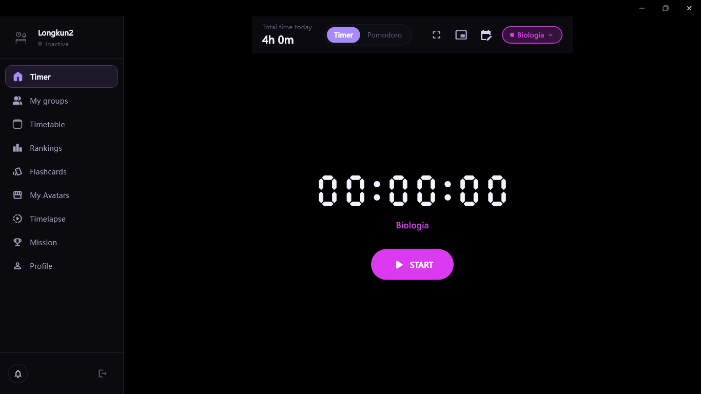

Deep focus, colorful Pomodoro timer, real-time Live Study groups and full statistics in a stunning AMOLED True Black interface for Windows, macOS and Linux.

Automated Tests
Languages Supported
Distractions (Focus Mode)
Open Source (MIT)
Everything you need for deep focus, tracking friends in real time, and improving day after day.
Fully customizable normal and Pomodoro cycles. Organize subjects with custom colors and log past sessions with instant cloud sync.
See who is studying in your group in real time. Send Shakes, chat with emoji and use Live Study camera verification.
Visualize your consistency with a GitHub-style annual heatmap. Keep your flame streak alive and climb global leaderboards.
Automatically detect apps stealing your focus. Use the floating Always-on-Top Mini Player to keep the timer visible while multitasking.
Study decks with SM-2 spaced repetition. Built-in PDF reader with bookmarks and instant card creation.
Visual countdown timers for exams and goals. Task lists with priorities and deadlines, plus weekly timetable planning.
Explore Desky’s interface in your preferred language with Material Design 3.
Native installers with built-in auto-update support.
Windows 10 / 11 (64-bit)
macOS 12.0+ (Apple Silicon & Intel)
Ubuntu, Debian, Fedora, Arch